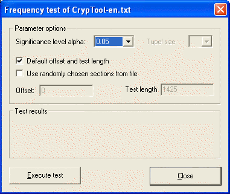
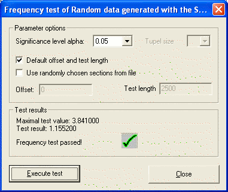
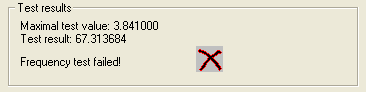

You can reach this dialog via the menu entry Analysis \ Analyze Randomness \ Frequency Test.
A default dialog for the Frequency Test looks like this:

In this dialog it is possible to choose and determine various parameters. The significance level alpha can be any one of three predetermined values: 0.01, 0.05 and 0.10. The Tuple size combo box is not intended for this test and therefore does not work.
The Default offset and test length check box is used to decide whether the default values (offset = 0 and test length = file length) should be used in the test or user-defined values.
The Use randomly chosen test blocks checkbox is used to determine whether random offsets and test lengths should be generated. If an offset and test length are specified and the Use randomly chosen test blocks checkbox is enabled, the values defined by the user are used during generation of the random offset and test lengths.
If these values are incorrectly selected, then the following error message is displayed:
along with a message box that looks like this:

To perform the test, click on the Perform test pushbutton.
After the Perform test pushbutton has been clicked, the dialog should look like this:

The maximum test value is a statistical value that is dependent on the significance level and is not exceeded if the test is passed.
The test outcome is a statistical value generated by the test, which is compared with maximum test value.
If the data does not pass the test, then the following message appears in the test status field:

To close the dialog and return to the CrypTool main window, click on Exit.